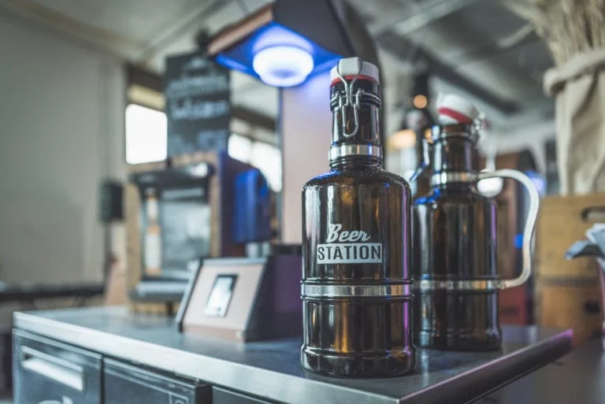

February 20, 2019
How IoT optimizes sales prediction and logistics
An universal problem of manufactured products
What is the key problem for any company that has to distribute its products, track and maintain them once
they have left the production site?
The problem is, once the products are loaded on to trucks or trains to go the customer, these products go
into a black hole datawise. This is true for any manufactured product that is mass produced. It does not
matter if the product is an industrial motor, beer, a chocolate bar, petrol, a heat pump or a coffee
machine.
At the production site, there are existing technologies for production tracking, issue reporting, and
maintenance. But once the products leave the production site, companies can no longer receive data from
their products. Also, they have no way to reach, remotely control and configure their products.
This problem is especially true for small and medium-sized enterprises (SMEs). Normally, SMEs do not have
the budget, the team or the know-how to develop an IoT system in house that would be able to solve the
problem.
Lack of real-time data for beer consumption
One of our clients is the largest brewery in Switzerland. Even though there are high demands for the
product, the brewery cannot predict sales and plan delivery routes. The reason is that they have no idea
about how much beer is currently in a beer tank and which restaurant or bar is likely to order soon.
For bars and restaurant, the bar operator has to manually check the level in beer tanks to ensure non-stop
beer supply. The brewery has to wait until one of their customers orders new beer by phone. As a result, the
brewery’s delivery system and route planning are completely reactive and erratic.
Connect beer to the cloud
Recently, a bar operator and the brewery no longer need to worry. Beer Station, a draft system IoT-enabled
by qiio, is an autonomous beer draft system for end consumers. With the concept of zero waste, an end
customer can fill up beer with their refillable bottles. In addition, Beer Stations also allow the brewery
to introduce a small amount of new beer to their customers for market research.
The IoT version of the Beer Station designed by qiio monitors and analyzes beer consumption in real-time.
The cloud portal will show how much of which beer is being consumed, when it is being consumed and where.
When a beer tank is empty, the system will report automatically. As a result, a bar operator will have
non-stop beer supply. On the other hand, the brewery can cluster different customers to create a smart route
plan.

qiio IoT hardware for beer
Beer Stations are installed all over Switzerland. The brewery will ship Beer Stations to locations by
trucks. Therefore, the IoT hardware for the Beer Station must be robust for the transportation process. In
addition, the brewery requested to have device and security updates. As a result, among three different
types of qiio IoT hardware, the medium performance hardware is chosen. This qiio Concentrator hardware is
based on 4.5G and uses Azure SDK as Azure connecting technology. To know more about three different qiio
hardware, you can visit this article.

qiio software & cloud services for beer
Every Beer Station has a local machine software for machine control and user interface. Previously, a
technician had to travel to every Beer Station to install new software features. Today, new software
features can be rolled out over the air. qiio application management, one of the cloud services, enables
this convenient feature. As a result, the brewery saves all service rides required before for machine
software updates.
The brewery should conduct security and maintenance updates regularly to ensure long-term operation. In
addition, there are changes in machine configuration from time to time. As a result, the brewery also
requested to do the above-mentioned updates remotely. Via qiio device management, the IoT logic can be
monitored and configured for all machines with only some clicks. A service technician does not need to go to
all machines for device updates.
Beer Stations are installed from huts in mountains to events at the lake of Zurich. Thus, a connectivity
technology that can work stably in the different environment becomes important for the brewery. The qiio
hardware provides the latest cellular technology 4.5G to secure stable cloud connection. The brewery can use
qiio connectivity management to monitor machine operation. In addition, the brewery can also check if Beer
Stations are properly connected to the cloud in order to conduct remote updates.
By understanding how a Beer Station is used, a predictive maintenance logic will suggest the optimal
maintenance cycle for every machine. The IoT-enabled Beer Station brings value to both customers and the
brewery. The brewery now is able to plan delivery routes since they know the real-time beer consumption. The
Beer Station allows the brewery to increase efficiency because thousands of kilometers are saved for
transportation.

Strong corporate partners
Swisscom and Microsoft are two corporate partners in the Beer Station project. Swisscom supports project
management and communication between qiio and the brewery. Microsoft gives qiio guidance on the development
of cloud services since the cloud solution runs on Microsoft Azure. Microsoft Azure Sphere provides high
security and is used in qiio Concentrator Sphere hardware. qiio is honored to become the first OEM partner
of Azure Sphere.
Visit qiio at two global exhibitions!
If you are interested in qiio IoT solution, visit qiio at:
Mobile World Congress in Barcelona, Hall 3 booth 3N10, from 25th to 28th February
embedded world in Nuremberg, Hall 4 booth 4-422, from 26th to 28th February
In both exhibitions, qiio will present an IoT solution for sales prediction and logistics optimization. Feel
free to come by to see how your business can benefit from an end-to-end and secure IoT solution.